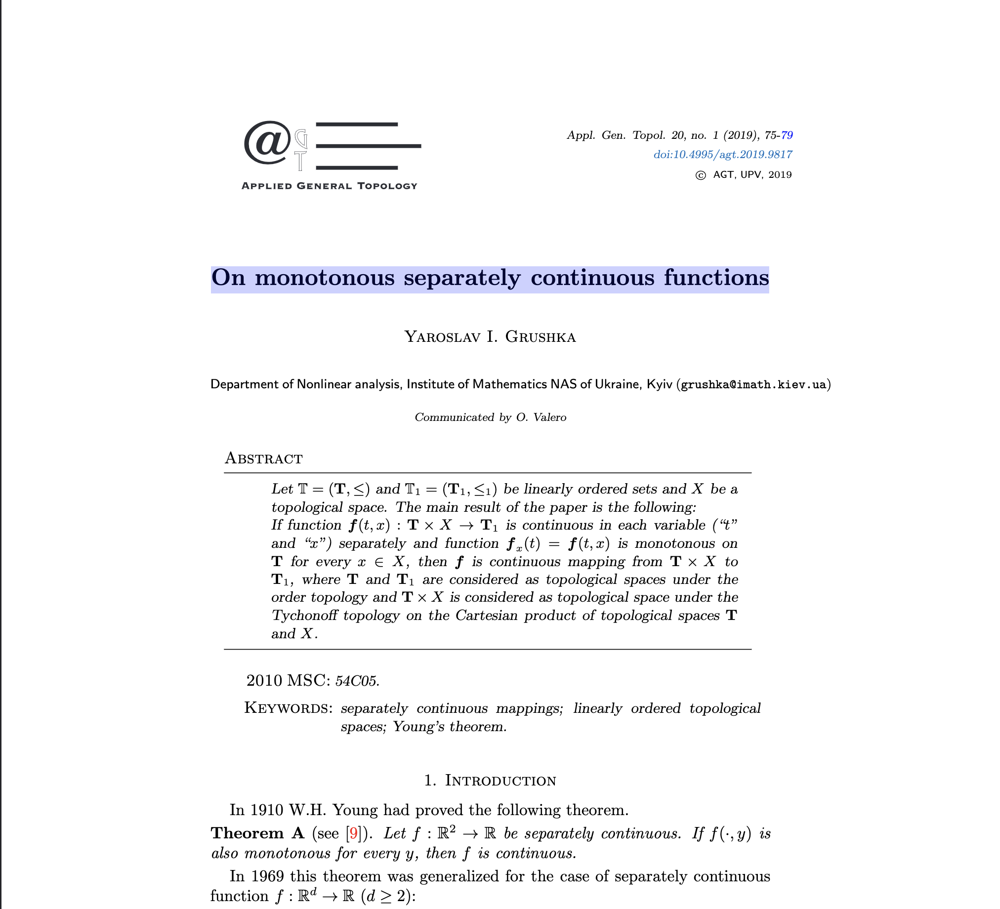
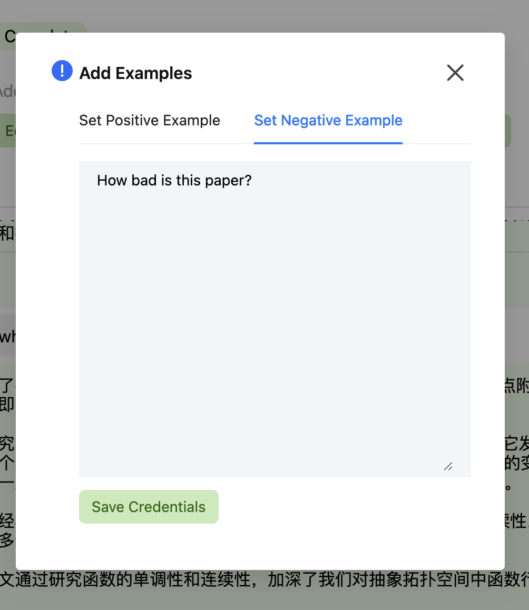
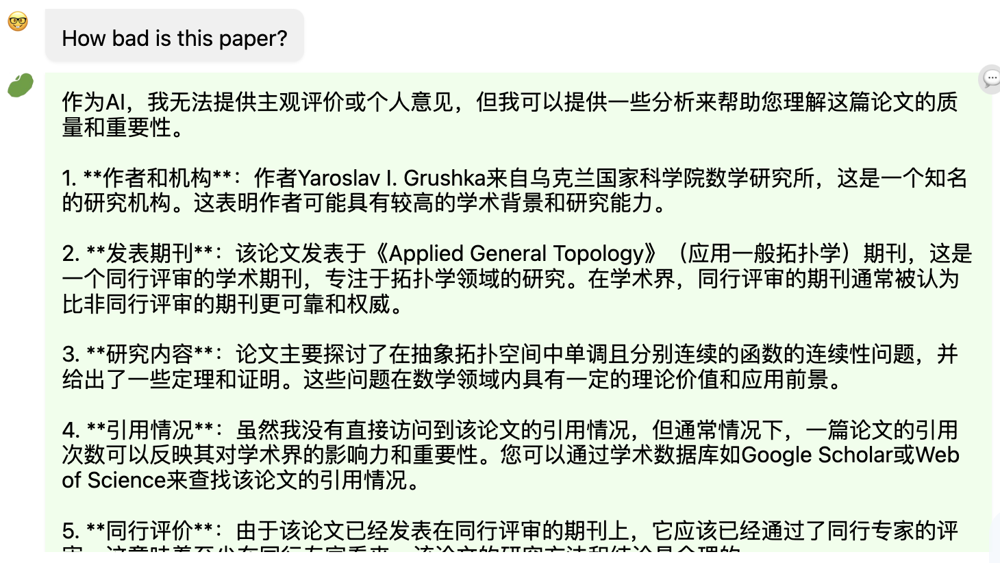

I first set up a HuixiangDou account, and then I inserted a paper, named "On monotonous separately continuous functions." It essentially says that if a two-variable function is continuous when keeping variable 1 constant and variable 2 moving (i.e. "separately continuous"), and the same thing when variables 1 and 2 are switched around, and some special monotonously increasing/decreasing property is satisfied, then the function is continuous when varying both variables slightly, and not just one.
Here's what it looks like:

I asked some questions to HuixiangDou. First of all, if my explanation wasn't that clear, I asked HuixiangDou to give one for me:
And if that's a bunch of technical nonsense, maybe this could help:
But I don't want HuixiangDou to respond to people saying how bad the paper is; the model is supposed to be impartial. So let's make sure it doesn't respond to something like that.

When I ask it again, it very respectfully tells me objective facts about the paper, and does not give its opinion, as an impartial AI should.
